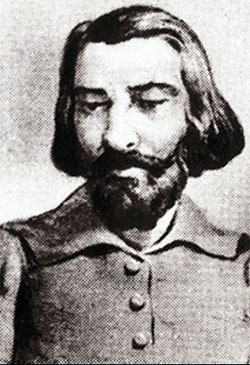

Foi um poeta e dramaturgo português que nasceu em Guimarães, Portugal e estudou na Universidade de Salamanca, Espanha. Sendo considerado o Pai do Teatro Português e a figura mais importante do humanismo literário, teve seu primeiro trabalho o “Auto da Visitação” e ao longo do tempo, foi conquistando a admiração tanto do povo como dos reis. São características de suas peças o caráter popular, forte sátira, as críticas dos costumes da sociedade portuguesa da época e um teor moralizante com humor. Outra obra muito importante do autor é a Trilogia das Barcas, compondo o Auto Barca do Inferno, Auto da Barca do Purgatório e Auto da Barca do Paraíso.
- Diabo: capitão da barca do Inferno.
- Anjo: capitão da barca do Paraíso.
- Fidalgo: tirano e representante da nobreza, vai para o inferno.
- Onzeneiro: homem ganancioso, agiota e usurário, por isso vai para o inferno.
- Joane, o Parvo: inocente e com vida simples, foi para o céu.
- Sapateiro: homem trabalhador, mas que roubou e enganou seus clientes. Com isso foi para o inferno.
- Frade: representante da Igreja, mas que tinha uma amante, Florença, por isso foi para o inferno.
- Brígida Vaz: condenada por bruxaria e prostituição, vai para o inferno.
- Judeu: personagem que foi recusado pelo Diabo e pelo Anjo, por fim, ele vai para o inferno, mas não no barco e sim a reboque.
- Corregedor e Procurador: Ambos vão para o inferno, pois foram acusados de serem manipuladores e utilizarem das leis e da justiça para interesses pessoais.
- Cavaleiros: grupo de quatro homens que lutaram para disseminar o cristianismo em vida e, portanto, são absolvidos dos pecados e vão para o céu.
A história começa por meio da presença de dois barqueiros, o Anjo e o Diabo, eles recebem as almas dos passageiros que passam para o outro mundo. Essa cena ocorre em um porto, logo, um barco leva para o inferno e outro para o céu A maioria das personagens vão para o barco do inferno, pois foram trapaceiros, avarentos, interesseiros e cometeram diversos pecados durante sua vida Por outro lado, quem seguia os preceitos de Deus e viveu de maneira simples vai para a barca do Paraíso, sendo eles: o Parvo, e os quatro cavaleiros.
- A obra de Gil Vicente Auto da Barca do Inferno foi inspiração para a criação de Auto da Compadecida, possuindo a semelhança no próprio nome;
- Muitas das peças do autor eram apresentadas em via pública, e o Auto da Barca do Inferno era apresentada durante as missas, sendo mais rápida e possuindo uma crítica moral aos cristãos, para que assim revejam os seus atos;
- O Auto possui um único ato, focando em cenas que contenham as falas das almas que são julgadas pelo anjo e pelo diabo. Além disso, a maioria das almas são representações típicas da sociedade da época, não fugindo da realidade das pessoas. As almas não eram identificadas por nome, mas sim por ocupação social, enfatizando ainda mais que diversas pessoas daqueles grupos poderiam ser consideradas pecadoras.